SPS-Programmierung
Strukturierte, wartbare Steuerungssoftware mit CODESYS – inklusive Motion, CNC-Bahnsteuerung und EtherCAT. Sauber dokumentiert und übergabefähig.
Automatisierungstechnik für den Maschinen- und Anlagenbau
SPS-Programmierung, Elektrokonstruktion, Sicherheitstechnik und Retrofit – geplant, umgesetzt und in Betrieb genommen aus einer Hand. In Deutschland, Europa und weltweit.
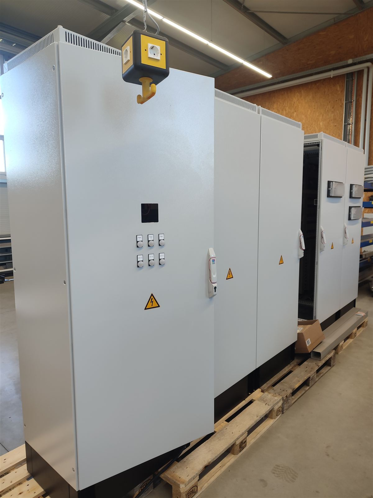
Was wir tun
Ob Neuanlage, Serienmaschine oder Modernisierung im Bestand – wir übernehmen das komplette Automatisierungspaket oder unterstützen gezielt dort, wo Kapazität oder Know-how fehlt.
Strukturierte, wartbare Steuerungssoftware mit CODESYS – inklusive Motion, CNC-Bahnsteuerung und EtherCAT. Sauber dokumentiert und übergabefähig.
Normgerechte Schaltpläne mit EPLAN Electric P8 – vom Stromlaufplan über Aufbaupläne bis zur Stückliste. Zertifiziert als EPLAN Certified Engineer (ECE).
Sicherheitskonzepte nach EN ISO 13849, Bewertung mit SISTEMA, sichere Antriebstechnik (STO/SS1/SLS) und Safety über FSoE – durchgängig bis zur Validierung an der Maschine.
Neue Steuerung, neue Bedienung, neue Sicherheitstechnik – auf bewährter Mechanik. Wir lösen Altsteuerungen ab, bevor Ersatzteile und Wissen verschwinden.
Moderne, klare Bedienoberflächen und Maschinensoftware – vom Bedienpanel bis zur Datenschnittstelle in Ihre IT. Damit Bediener gerne mit der Maschine arbeiten.
Inbetriebnahme vor Ort – auch international. Dazu Fehlersuche, Optimierung laufender Anlagen und Unterstützung, wenn es schnell gehen muss.
So arbeiten wir
Wir schauen uns Ihre Maschine, Ihren Prozess und Ihre Ziele an – vor Ort oder remote.
Konzept, Schaltplan, Sicherheitsbewertung und ein klarer Fahrplan mit Terminen.
Software, Schaltschrank und Visualisierung entstehen – getestet, bevor es an die Maschine geht.
Inbetriebnahme, Optimierung und Einweisung Ihres Teams. Dokumentation inklusive.
Digital geplant, real gebaut
Jeder Schaltschrank entsteht bei uns zuerst digital – als 3D-Aufbauplan in EPLAN Pro Panel. So sind Platz, Klimatisierung und Verdrahtungswege geklärt, bevor die erste Schiene gesetzt wird. Hier dieselbe Anlage einmal als Plan und einmal kurz vor der Auslieferung:
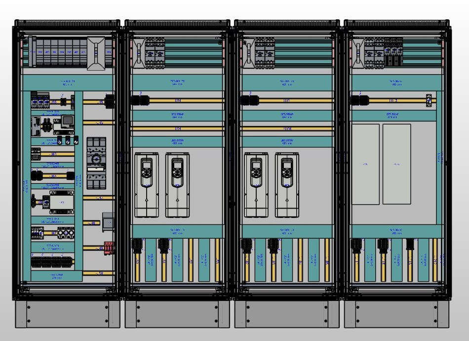
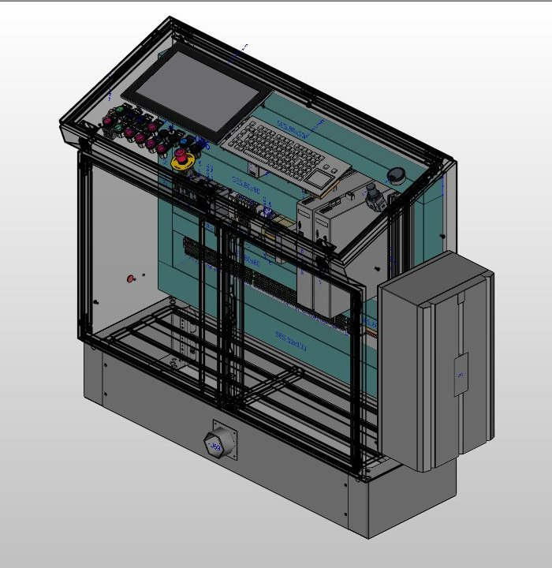
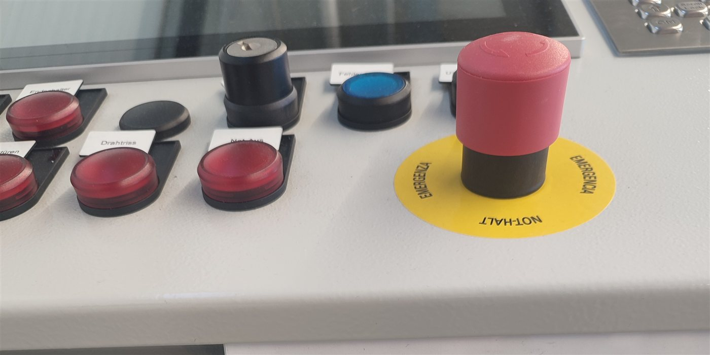
HMI & Maschinensoftware
Bedienoberflächen entstehen bei uns zusammen mit der Steuerung – direkt in CODESYS oder als eigenständige Anwendung. Mit klaren Anlagenzuständen, durchdachtem Alarmmanagement, Benutzerrollen und Mehrsprachigkeit ab Werk.
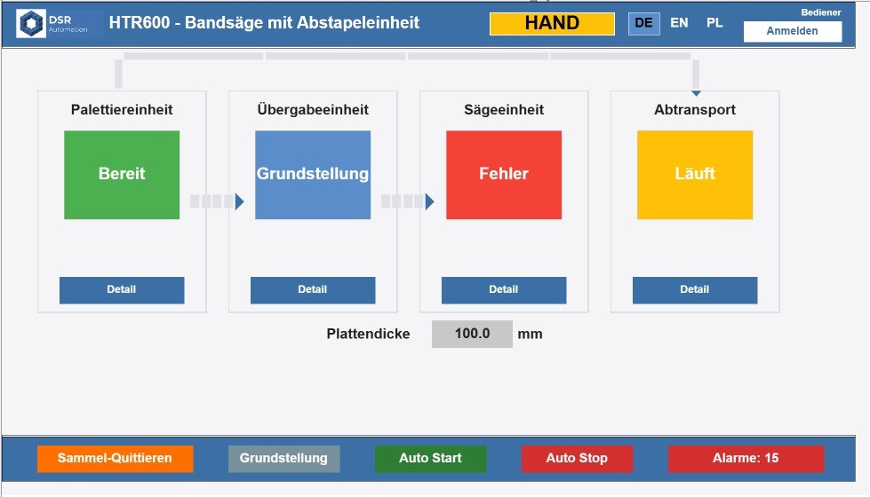
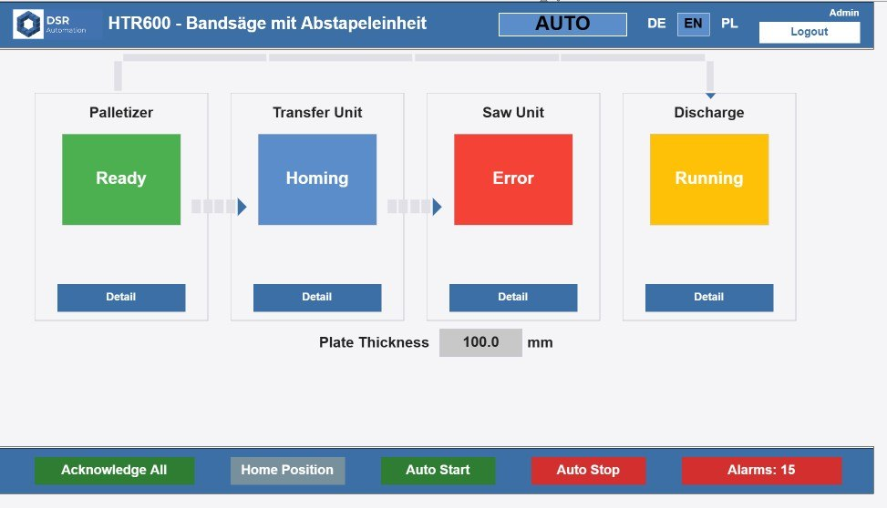
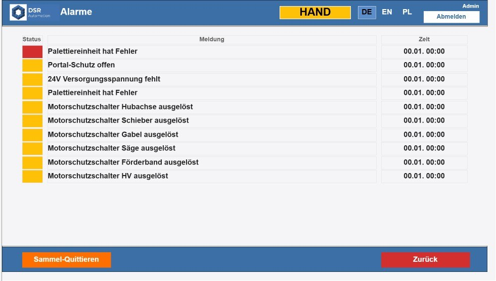
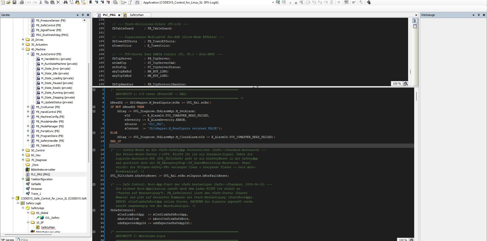
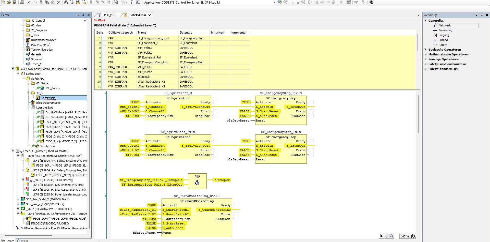
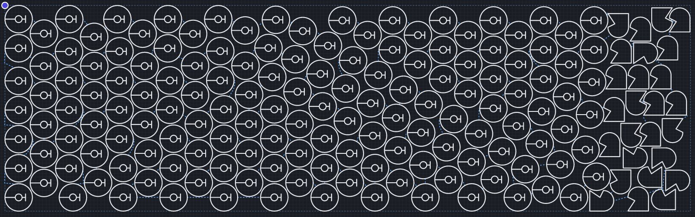
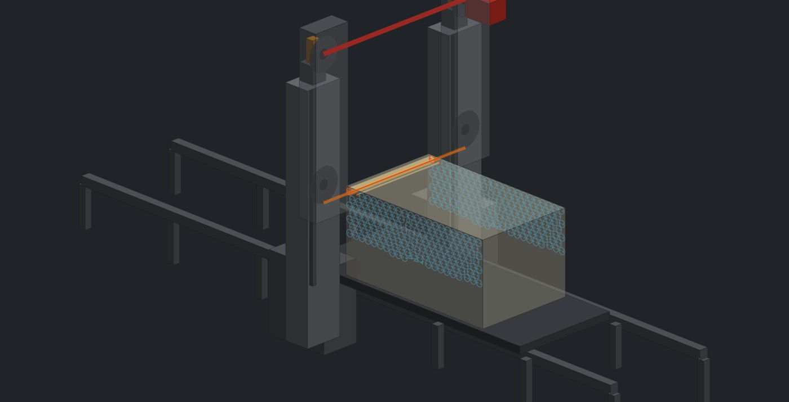
Wo wir zuhause sind
Seit vielen Jahren automatisieren wir Maschinen und Anlagen für Hersteller und Betreiber – vom Sondermaschinenbau bis zur Serienmaschine.
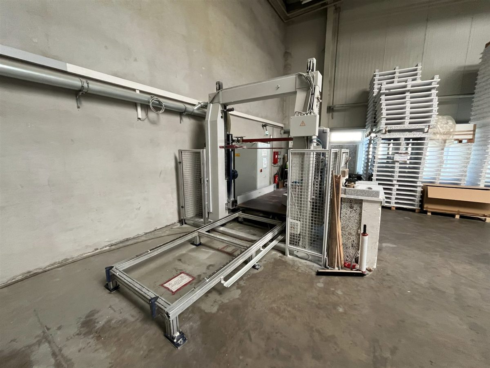
CNC-Schneidanlagen, Konturschneiden, Profilieranlagen – inklusive Bahnsteuerung und Nesting.
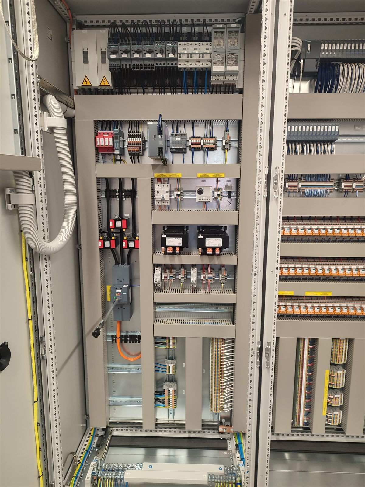
Komplette E-Konstruktion und Steuerungstechnik für Serien- und Sondermaschinen.
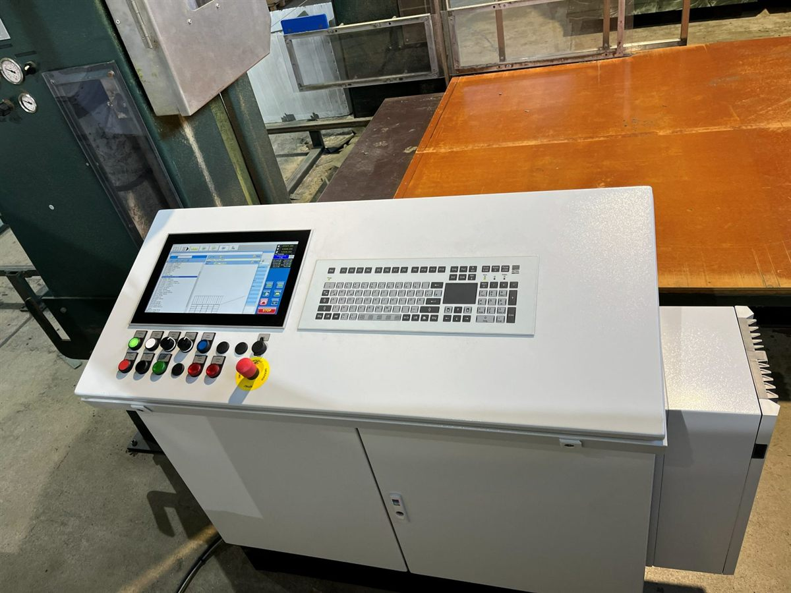
Modernisierung von Bestandsanlagen: neue Steuerung und Safety bei minimalem Stillstand – hier ein neues Pult an bewährter Mechanik.
Referenzen und Ansprechpartner nennen wir Ihnen gerne auf Anfrage.
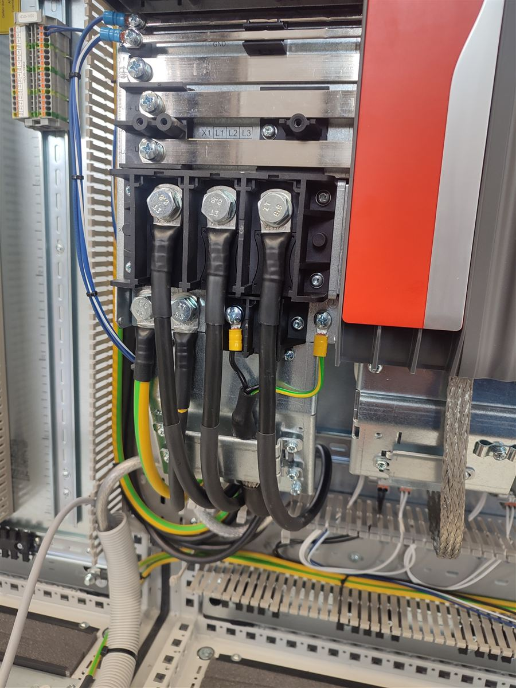
Wer dahinter steht
DSR Automation ist der Fachbetrieb von Denis Rejek – spezialisiert auf Steuerungstechnik und Elektrokonstruktion für den Maschinen- und Anlagenbau.
Was uns ausmacht: Wir denken nicht in Gewerken, sondern in funktionierenden Maschinen. Schaltplan, SPS-Code, Sicherheitstechnik und Bedienung kommen bei uns aus einer Hand – das spart Schnittstellen, Zeit und Diskussionen.
AlbWerk Geislingen eG – das handwerkliche Fundament.
Vom Schaltschrankbau zur SPS-Programmierung (CODESYS, TIA Portal) und Inbetriebnahme von Sägeanlagen – im Werk und beim Kunden.
Steuerungssoftware und Inbetriebnahme diverser Anlagen, Antriebstechnik SEW.
Schaltplanerstellung mit EPLAN P8, SPS-Software und Auslegung der Sicherheitstechnik – in enger Abstimmung mit Konstruktion, Einkauf und Montage.
Start im Nebengewerbe in Laichingen – abends und am Wochenende für die ersten eigenen Kunden.
Der Sprung in die Vollzeit-Selbstständigkeit in Heroldstatt – für Maschinenbauer und Betreiber in Europa und Übersee. Seit 2025 mit Sitz in Ulm.
Fachrichtung Automatisierung · EPLAN GmbH, 2023
TÜV / Pilz, 2025
IHK, 2025 – für reibungslose Auslandsprojekte
Grundlagen · SPS · Makrotechnik · Scripting/Automatisierung · Artikel-Stammdaten · Setup & Konfiguration
Sprechen wir über Ihr Projekt
Schildern Sie uns kurz Ihr Vorhaben – wir melden uns in der Regel innerhalb eines Werktags zurück.
Oder rufen Sie einfach an – oft ist ein kurzes Gespräch der schnellste Weg.